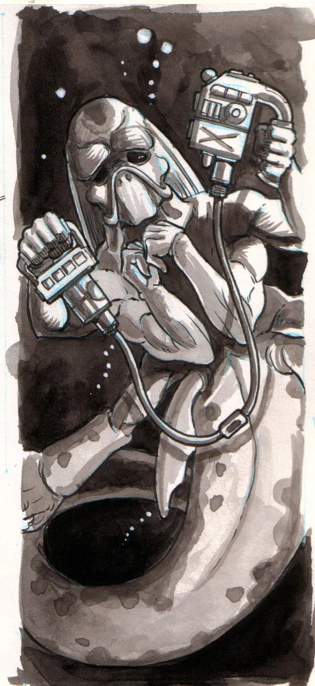
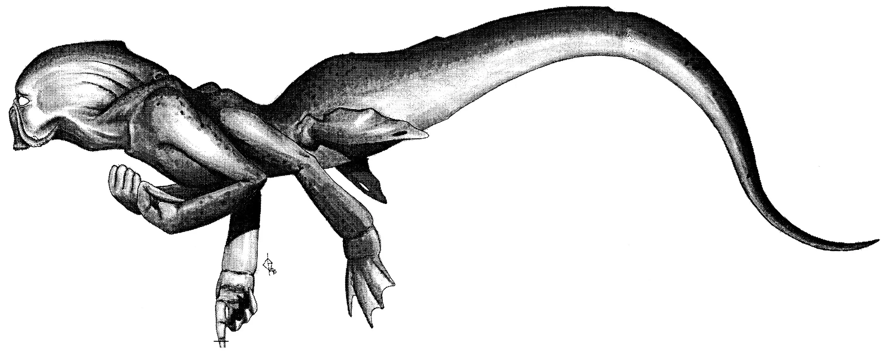
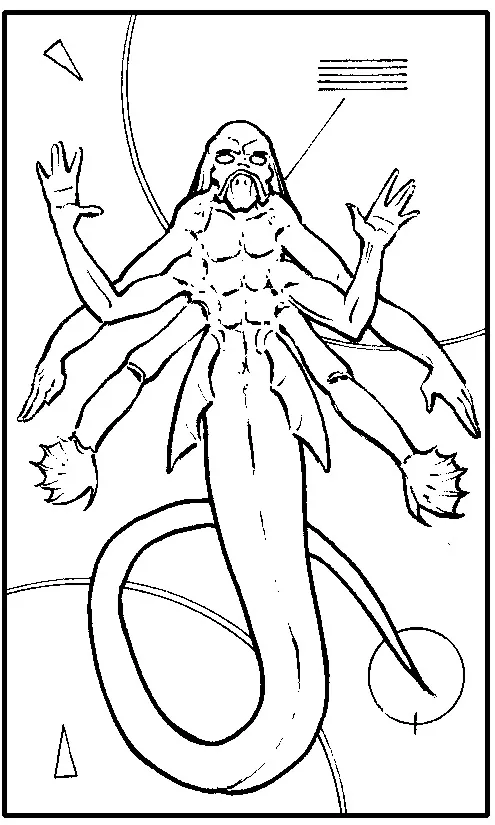
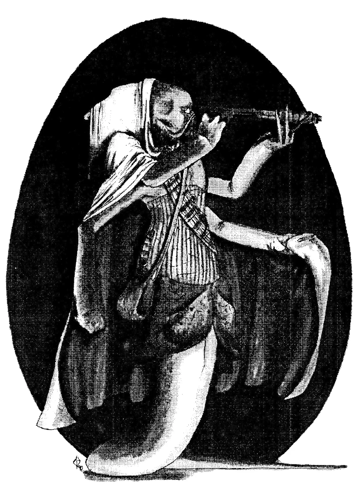

Physiology
Vjesperé are aquatic, hexapoid, bipeds of a close mammalian decent, their actual ancestry being intertwined to that of the amphibian and whose form can be most aptly described as, humanoid. To compensate, and keep them from falling over, the weak Vjespéran feet are taking the first steps towards a more stable reptilian form. During the first adolescence, tails develop on the female Vjesperé by the repetitive fission of these last bones, something which does not occur on the males and is attributed to a form of neoteny, or a hanging on of characteristics from infancy (all Vjesperan have tails until shortly after birth). Vesperé are herbivorous and therefore have a corresponding type of broad, high crowned teeth. It is also in this latter time that another set of molars erupt at the back of the mouth, forcing the jaw to lengthen and form a sort of small snout. Interestingly, the whole of the digestive system is infested with a small parasite, called "Mrii" (in Vjespéran tongue). While harmless to Vesperé, they are quite deadly to the Human, Faborian, Krane, Low Kaan and Dwearin races. Vesperé are Oxygen breathers and have two principle methods of collecting the gas. The other method, used when in water, applies dual rows of triple gills located on the underside of the Vjespéran head- cone. As one could guess, Vesperé are amazingly adept underwater and operate in it at home. A general rule used by Vesperé when determining the length of time to spend underwater is one hundred and fifty minutes minus one minute per year of life. Vesperé also have long, sensitive earlobes and totally lack such skin formations as nails, claws or the like, but do have a third, clear eyelid for underwater viewing. This usually is not a problem on Agaedine, but when in drier climes, Vesperé must occasionally soak themselves in a mineralized water. Vesperé don't perspiration, but do secrete something similar called, 'hhroush'. At around the age of nine years, the Vjespéran enter their first adolescence, a second arriving three quarters of a century later. Vesperé 'see' as other races do, often better, a difference is that they have no pupil to control the amount of light entering the eye. This clearity falls off greatly with distances, however, and often a Vesperé will only see far off landmarks as solid shapes of colour. The Vjespéran senses of smell and taste are almost equivalent to a Human's and hearing (while improved) is about two-thirds as effective as a man's, sensing about two-hundred and seventy to thirteen thousand cycles per second.

Senses
The most important of the mahendoshi senses is that of sight. Evolving originally from nocturnal scavengers, their eyes are large and sensitive to maximize the amount of light gathered. Although this does not make them vulnerable to flash blindness, they are able to see in extremely low light levels, and additionally can perceive the infrared. Mahendoshi eyes cannot interpret colours higher than yellow or green on the spectrum. Their range of hearing is generally about equal to a human's, though high sensitive in the low and sub frequency band (24-14000 Hz). Manhendoshi ears are small and cupped for listening to surface noises through rock.

Speech
Sound is produced by expelling air over a dual set of thread-like 'vocal chords' in the trachea. Vesperé can speak most languages spoken by the humanoids of the Foundation. A Vesperé will 'bleet' when in distress, sounding much like a shrill bagpipe across Agaedine's salt seas.
Social / Culture
Vesperé are closer and friendlier towards the natural environment more than any other sentient race, and this fact, among others, has caused them to be widely regarded as galactic conservationists and sometimes even environmental radicals (something the Vesperé reflect on with pride). All individuals feel this way and share a common thirst to experience new climes and surroundings and to greet the alien life within, to the point where no one Vesperé could ever truly hate any form of life, no matter how vicious or evil it is. The practice was originally religious in nature, utilizing 'souls' instead of personalities, but it still retains its inherent purpose to form an environmental kinship in the mind of every Vesperé. The representative life form is chosen by parents at birth to symbolize a particular quality in a child, and is used as a fifth name (Vjespéran have eight names in total). Each Vesperé will typically have only one child throughout their lives and will always mate with a fellow duut. Paldashaul cooperate and constructively compete among themselves for goods, technologies, goals, and ideas in such a way that the Vjespéran homeworld actually uses an economic system of paldashaul networking. Vesperé live in homes that conform to the natural terrain both inside and out, with little in the way of actual construction except out of need or personal want. Sculpture is a Vjespéran forte as many individuals are known across the systems for their life-like renderings, dearly sought by collectors. Vesperé are a peaceful folk and will not usually partake in violence, save in self defence or when cared ones are unreasonably threatened. When an aiding MFC platoon arrived days later, it was discovered that a ceremony of forgiveness had been held in the Gorthi's honor and that they had been given a formal Vjespéran burial at sea!

Special Abilities
Sex
Life Span
Average Size 210 cm / 200 cm Average Mass 80 kg / 70 kg Diet herbivorous Reproduction hetrosexual / hermaphroditic Average Lifespan 170 years Body Temperature 35 C Blood Base / Colour Lead / orange Colouration topaz, golden, and chestnut browns
Vesperé - singular and plural Vesperéran - possessive Vjesperé is pronounced Vjess-pair-eh Homeworld ...

Second Sphere - Racial Size Comparison Chart - Racial Size Comparison Chart
 ---
---